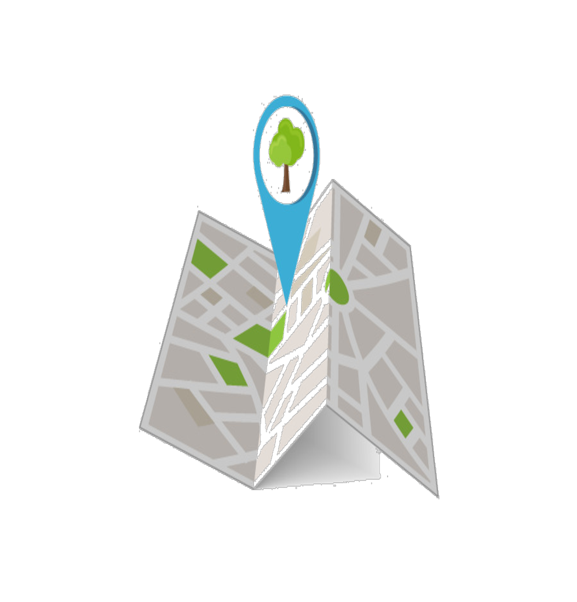
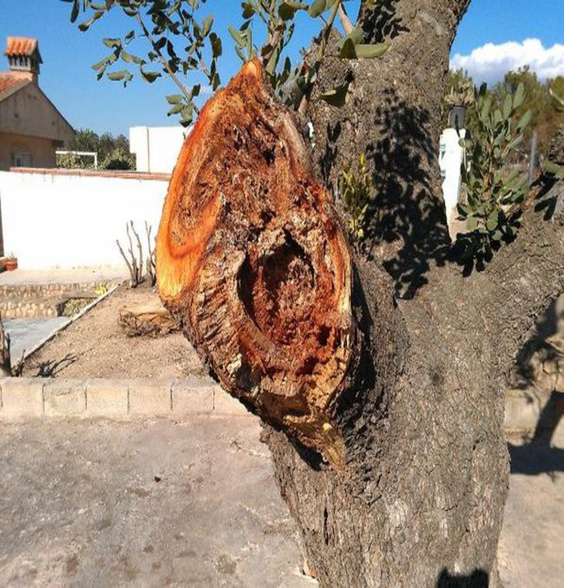

REPORTA UN ARBOL ENFERMO
Realiza el reporte de un arbol enfermo. Tomale una foto y subelo a nuestra plataforma
REPORTALO AQUI

CONSULTA LOS INDICADORES DE ARBOLES ENFERMOS
Consulta los distintos mapas de arboles enfermos en la ciudad y sus interveciónes.
CONSULTA AQUI

APRENDE COMO IDENTIFICAR UN ARBOL ENFERMO
Aprende como identificar un arbol enfermo, siguiendo los intrucctivos brindados por el EPA.
APRENDE AQUI
 APRENDE A REALIZAR INTERVENCIONES
Aprende a realizar la intervención que piensas llevar a cambo y los permisos que exige el EPA.
APRENDE AQUI
APRENDE A REALIZAR INTERVENCIONES
Aprende a realizar la intervención que piensas llevar a cambo y los permisos que exige el EPA.
APRENDE AQUI